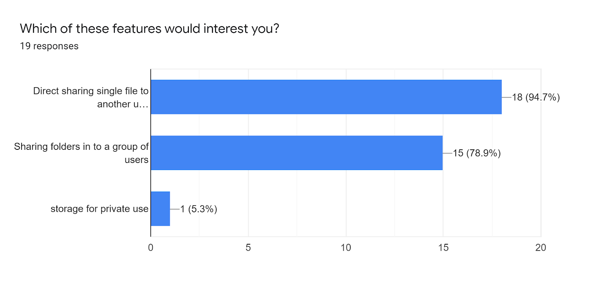
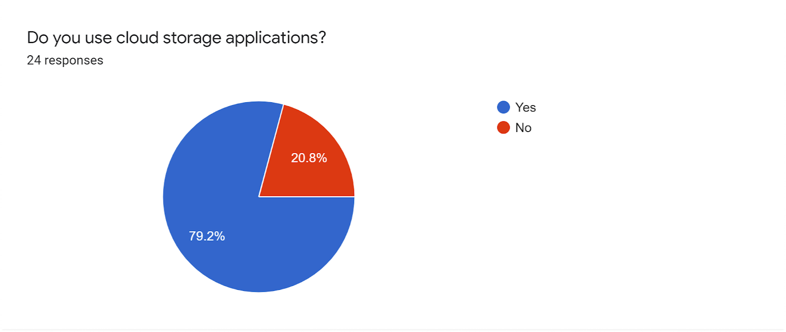

The player linking app
The Summary
In the Party Up project, I acted as the product designer/manager. Party Up set up to solve the issue of a lack of connection between players of MMO (Massively Multiplayer Online) games, and provide a platform to connect players and groups together for an easy and effective experience.
User Research:
- Competitive Analysis
- User Surveys
- User Stories and Flows
- User Personas
- Wireframes
- Style Guide
- Branding
- Usability Tests
- Hi-Fi Mockups
- Prototyping
Tools:
- Google Forms
- Figma
- Draw.io
- Usabilityhub
- Whismical
The Problem
The main problems to solve were that players of online games, particularly massively multiplayer role playing games, struggle to find groups of players to congregate with. While several games have a native system for finding party members, they’re generally cumbersome and hard to use.
The Solution
Party Up provides an intuitive and intricate solution to this problem by creating a platform where users are able to input desired weekly schedule, game, player experience (beginner, intermediate, master), as well as goals for their play (Causal, hardcore, ect.).
Process: Discovery and Research
Surveys
In order to get a better idea of where to start with the process of solving the problem, I initiated the project by jumping into user research via surveys to hear directly from potential users what features and ideas I might have to include to round out the project.
83% of participants played online games, of those users 80% of them conveyed that they primarily play MMORPGS. 73% of users indicated that they did have a steady group who they regularly played with, and of those participants 64% of them indicated that they were introduced to that group by someone who was already a member and who they knew in person rather than in the online environment. This gives me some direction, as the that don’t have a regular group conveyed that it was, in part, because they didn’t know other players who were in consistent groups.
I had several features that the client were interested in adding, so part of the survey asked users if they might be interested in these particular features. 95% of users expressed interested in directly sharing files to another user, while 79% of users indicated that they were interested in real-time collaboration on documents. Of the users interested in real-time collaboration, I was surprised to find that 93% of them preferred to have digital sticky notes on documents to indicate changes made!
The last two points were discerning what attracted them to the app that they already use, and how they prefer to login. 42% of users agreed that they prefer a simple app, as well as 21% would prefer to change from their current app because of a clunky User Interface. And of all users, 86% of users preferred to login via an email address.
Competitive Analysis
In order to better understand the market I analyzed three of the apps competitors, Plink, FTW, and Gamer Link. In this instance I'll be examining the weaknesses of each app in order to capitalize on their shortcommings.
Plink
- HUGE ISSUE - The desktop version isn't verified with windows
- Requires login to users personal accounts (Steam, Playstation network, Xbox live, Nintendo Online, ect), potential breach worries.
- Marketing and language makes the application appear more like a dating app for gaming enthusiasts rather than to meet other players.
- Based Primarily around FPS and MOBA';s
FTW
- Doesn't really show up in searches much
- Currently only a beta, Site can be unresponsive at times
- Has mobile browser support, but no native app
- Not the space for traditional MMO's
- System will sometimes fail when trying to input user info
- Nothing really talking about the app, focuses much more on showing but doesn’t give you clear instructions as to how to interact with other
Gamerlink
- Similar in color scheme to FTW
- Desktop site is for show only, must download mobile app for use
- Secondary colors are a little dull and hard to see next to the bright white color splashes
- Free-mium business plan
- Paid Premium doesn’t feel like it gets you much
Personas
Clark K.
Engineering Tech
31 yrs old
New York, NY
Motivations
Clark is consistently in search of like-minded people. His primary goal is to get into an event or game type, clear it with ease, and move on to the next thing. He’s aiming to find other players who have the same goals, and he’d like to know those goals ahead of time. Has experience with discord, but finds it hard to discover new servers to interact with people.
Goals
* Find a group that’s dedicated to clearing content efficiently
* Discern between groups based on gear/character leve
* Wants a mobile app as well as a desktop app
Frustrations
* Tired of trying in-game party finders that aren’t clear about player expectations
* Needs a stable app, as the ones he’s tried thus far have been clunky and frustrating
Kathleen D.
Junior Animator
25 yrs old
Phoenixville, PA
Motivations
6 months ago several of Kathleen’s friends stopped playing the game the group was playing together, and she’s struggled to maintain interest in the game. She enjoy’s MMO’s and MOBA’s but hasn’t been able to make progress due to being unable to find a consistent group. She’s tried in-game party finders, but has struggled to meet players due to being shy around new people, as well as having a busy schedule.
Goals
* Find a group that’s friendly and consistent
* More players of the same gender
* An option to let established groups looking for players reach out to her
Frustrations
* Has discord but hasn’t been able to find active servers or groups
* Needs something that allows her to push through shyness
User Stories
With the user stories process I referred back to the competitive analysis to understand more about what features each of them specifically shared and get a much better idea of features I would need as well. I broke each of the three levels down as follows:
High = What we need to get to market immediately
Mid = Features that are wanted and will be added
Low = Features that would be nice to have but aren’t of the highest priority
Lofi Wireframes
In the case of wire-frames, rather than starting specifically from scratch, I chose to start with a splash page that seemed strong and began iterating on that, as well as the login and the dashboard pages.
Of these iterations, I began to like how the second splash page was starting to come together, but I’ll have to test them with users to get a better idea of what elements are going to work and make sense. Good progress for now, so I moved on to working on the login page.
With the logo page, the idea behind it was to leave enough space to have the login/signup elements increase in number and shift upwards vertically as you progressed from task to task. It was similar in concept to the Gamer Link login/signup page, and thought that it looked quite strong. Onward to the dashboard.
The dashboard is where the process begins to slow down considerably. This was really the only page that didn’t have some sort of reference to use, as the other competitors primarily use a dashboard that’s only sort of a typical dashboard. While a usual dashboard is full of CTA’s and navigation, the competitors focus almost entirely on the last search/newest posts from their community for the user to find/use. So finding a middle ground where the users of Party Up will be able to ingest information that’s different while also being provided information that’s quite familiar.
Lofi Wireframes

I developed each of these at around the same time so rather than decide which of them I personally liked, I gathered a test group and ran a preference test for each in order to get the most unbiased opinion. In this case, the first iteration won out.
The login pages were universally liked amongst the test group.
In the instance of the dashboard, there was a slight disconnect. According to the test group, the first and third iterations look too much like a profile page, which I agreed with after removing myself from the equation. They felt the second iteration made more sense. It follows the idiom of the previously mentioned competitors, but in the immediate moment it solves the issue of a confusing dashboard page.
The player and group profile layouts were generally liked as well. While there are some symmetrical issues, the overall idea was well received and easy to understand according to the test group.
The search criteria and post page were also well received. There needed to be an emphasis on the search page to have a distinct amount of detail, while the posts/groups page needed to be less detailed with information in order to not overwhelm the user.
Initial Mockups
The mockup and branding is where I ended up having to spend the majority of my time. There were a lot of questions concerning color scheme and implementation, and how to maintain an aesthetic that would continue to appeal to our target demographic. In a preliminary user test, 85% of participants felt that they primarily use apps in night mode, so I had a heading in terms of palette to work with.
As illustrated by the poll taken via Usability Hub, the fourth iteration with the gold/yellow highlights tested well amongst participants. Now having a more consistent heading, we move to the first official mockup!
With the first iteration, it was a decent start but needed work and direction to be considered fuller. I put together a user test and had two participants of the last preference tests to provide their input into this stage of the process.
Participant 1, able to sign up and login, but felt that the dashboard was somewhat confusing, expressing that she wasn’t entirely sure what page she was on and thought it auto-searched. She also felt like the design felt a bit plain. When I questioned her on her opinion, she eventually expressed that she felt like an image or something of the like might help as a background. Liked the icons on the profile page, but hoped that the console illustrations on the profile page were slightly bigger.
Participant 2, didn’t struggle with any task in particular. Felt the app was straight forward. However, he felt that the arrows in the dropdown menus were dark and hard to see. Was very interested in the group section of the app, and expressed that he’d prefer the ability to create a group without having to make a whole new group profile. Was confused by the “currently playing” section, and didn’t realize they were tags until he’d asked about them. Felt the splash pages images were “kind of lame.” Thought there could be an easier way to search, rather than having to go back to the dashboard page.
This was invaluable feedback, and aided in the following choices.
With the previous feedback in mind, I created a mockup that contained lighter arrows, bolder buttons on the dashboard page, a textured background image, increased illustration sizes, and more. This time, however, I ran another user test with several of my peers rather than the target and gained significant feedback.
Peer 1, Felt the header on the splash page was redundant. The buttons on the dashboard page, while easy to see, were also redundant and would’ve hoped to see something that made it easier to jump right into the purpose of the app with more of a “show, don’t tell” approach. He also pointed out to double check header sizes to ensure a sense of uniformity throughout the process.
Peer 2, Liked the use of icons to represent platform, but felt that introducing a new color added too much of a change. Also felt that the groups in the searched post page needed more detail to help tell them apart, “it feels very wordy right now.”
Branding and Identity
In the case of the final style guide, colors that tested consistently better with users were chosen, with green being the primary and purple being the secondary. Each of the logos are displayed in the primary color, and the purple is used to accentuate icons or add variation for text background. The type, Domine and Karla, also tested well amongst participants and continued to be the header and paragraph texts respectively.
Final Thoughts
This project was a very distinct labor of love. As a game player myself, I found that I had to stop myself from making assumptions about steps in the project, and realign myself with the needs of the user. While I could use my experience of feeling lost in an ocean of groups and players, and being unable to interact or play with them, I had to be sure to stick to the data whenever possible.
What I found in this project was that it’s never a bad thing to lean on your circle/network of peers to double check your choices and iterations before going straight into testing and seeing exactly what the users are going to interpret well. It helps to sift through the nonsense ideas to have a fresh pair of designing eyes say “I think maybe this might work better” or “have you tried this variation?” and helps create a higher quality product before getting to the users. This, above all else, will be the lesson I take to my grave.